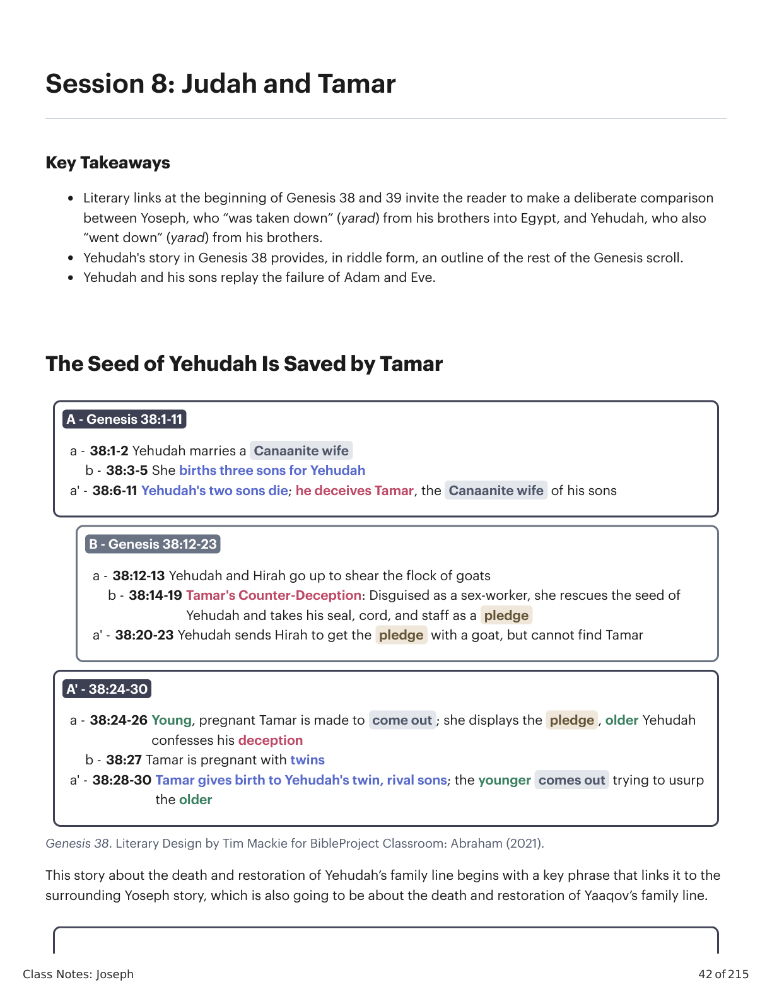
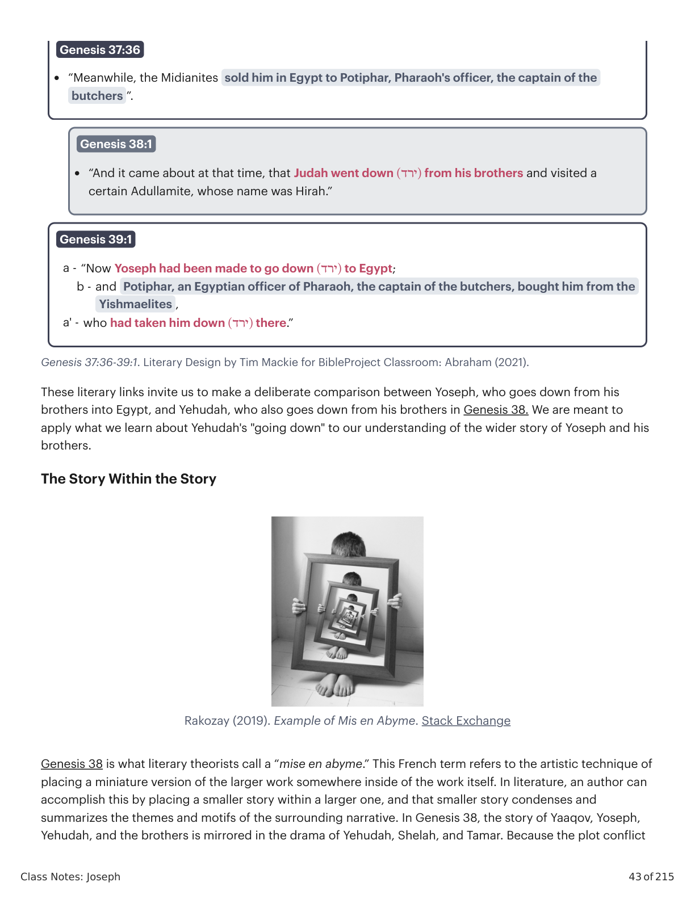
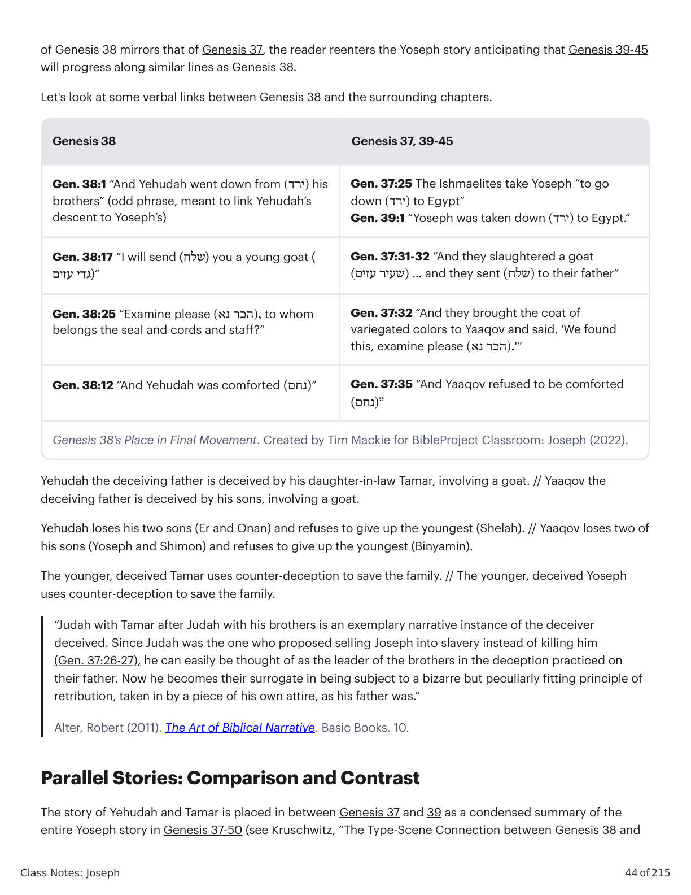
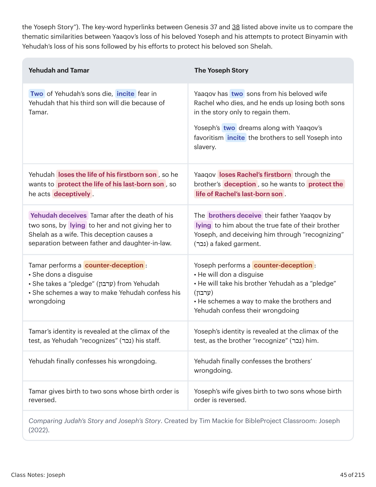
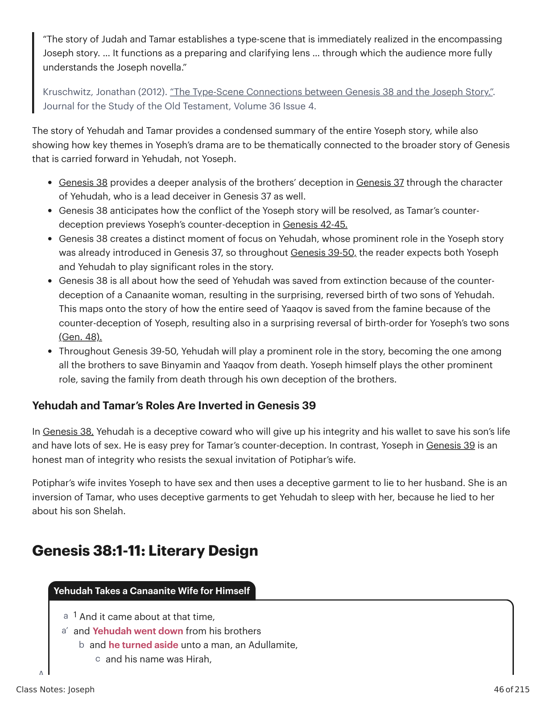
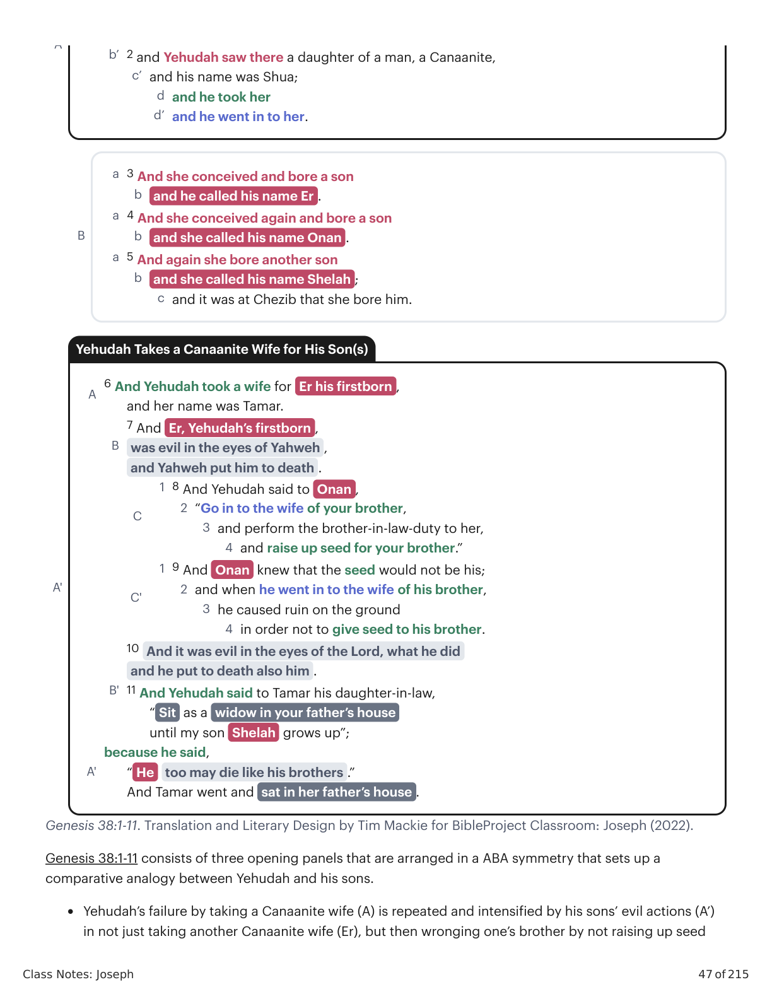
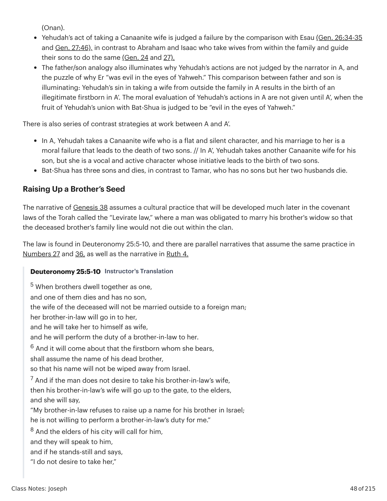
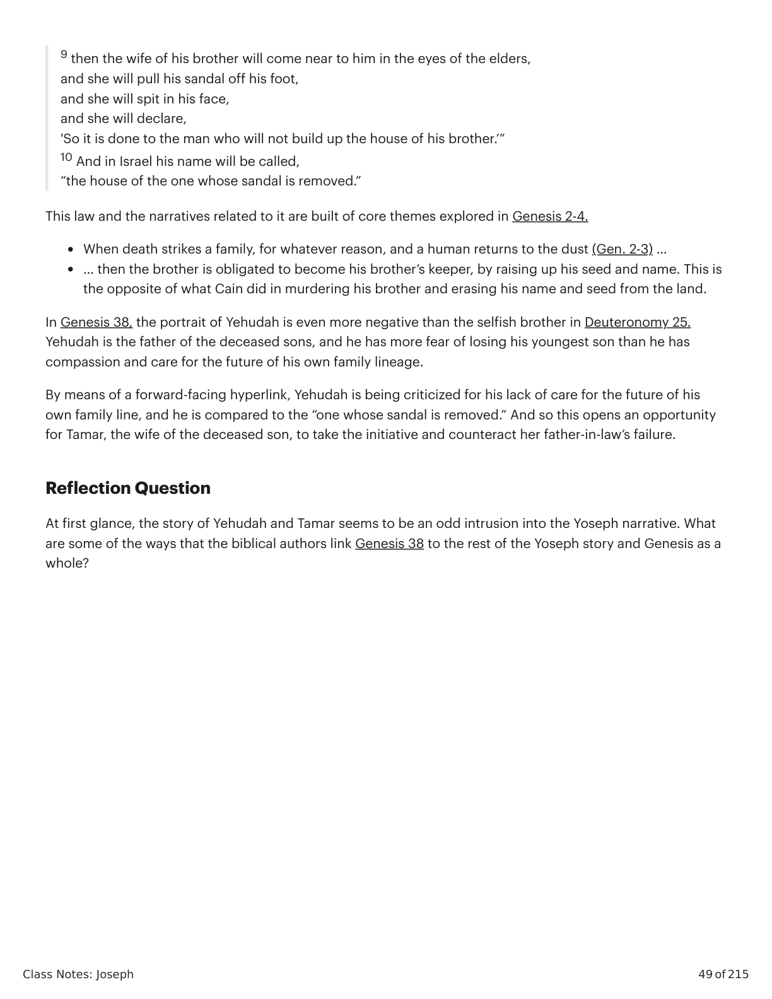

Gênesis 1:1-11:26. Tradução e Design Literário por Tim Mackie para BibleProject Classroom: Abraão (2021).Genesis 1:1-11:26. Translation and Literary Design by Tim Mackie for BibleProject Classroom: Abraham (2021).
Class Notes: Joseph 42 of 215 Session 8: Judah and Tamar Key Takeaways Literary links at the beginning of Genesis 38 and 39 invite the reader to make a deliberate comparison between Yoseph, who “was taken down” (yarad) from his brothers into Egypt, and Yehudah, who also “went down” (yarad) from his brothers. Yehudah's story in Genesis 38 provides, in riddle form, an outline of the rest of the Genesis scroll. Yehudah and his sons replay the failure of Adam and Eve. The Seed of Yehudah Is Saved by Tamar Genesis 38. Literary Design by Tim Mackie for BibleProject Classroom: Abraham (2021). This story about the death and restoration of Yehudah’s family line begins with a key phrase that links it to the surrounding Yoseph story, which is also going to be about the death and restoration of Yaaqov’s family line. A - Genesis 38:1-11 a - 38:1-2 Yehudah marries a Canaanite wife b - 38:3-5 She births three sons for Yehudah a' - 38:6-11 Yehudah's two sons die; he deceives Tamar, the Canaanite wife of his sons B - Genesis 38:12-23 a - 38:12-13 Yehudah and Hirah go up to shear the flock of goats b - 38:14-19 Tamar's Counter-Deception: Disguised as a sex-worker, she rescues the seed of Yehudah and takes his seal, cord, and staff as a pledge a' - 38:20-23 Yehudah sends Hirah to get the pledge with a goat, but cannot find Tamar A' - 38:24-30 a - 38:24-26 Young, pregnant Tamar is made to come out ; she displays the pledge , older Yehudah confesses his deception b - 38:27 Tamar is pregnant with twins a' - 38:28-30 Tamar gives birth to Yehudah's twin, rival sons; the younger comes out trying to usurp the older Class Notes: Joseph 43 of 215 Genesis 37:36-39:1. Literary Design by Tim Mackie for BibleProject Classroom: Abraham (2021). These literary links invite us to make a deliberate comparison between Yoseph, who goes down from his brothers into Egypt, and Yehudah, who also goes down from his brothers in Genesis 38. We are meant to apply what we learn about Yehudah's "going down" to our understanding of the wider story of Yoseph and his brothers. The Story Within the Story Rakozay (2019). Example of Mis en Abyme. Stack Exchange Genesis 38 is what literary theorists call a “mise en abyme.” This French term refers to the artistic technique of placing a miniature version of the larger work somewhere inside of the work itself. In literature, an author can accomplish this by placing a smaller story within a larger one, and that smaller story condenses and summarizes the themes and motifs of the surrounding narrative. In Genesis 38, the story of Yaaqov, Yoseph, Yehudah, and the brothers is mirrored in the drama of Yehudah, Shelah, and Tamar. Because the plot conflict Genesis 37:36 “Meanwhile, the Midianites sold him in Egypt to Potiphar, Pharaoh's officer, the captain of the butchers ”. Genesis 38:1 “And it came about at that time, that Judah went down )(ירד from his brothers and visited a certain Adullamite, whose name was Hirah.” Genesis 39:1 a - “Now Yoseph had been made to go down )(ירד to Egypt; b - and Potiphar, an Egyptian officer of Pharaoh, the captain of the butchers, bought him from the Yishmaelites , a' - who had taken him down )(ירד there.” Class Notes: Joseph 44 of 215 of Genesis 38 mirrors that of Genesis 37, the reader reenters the Yoseph story anticipating that Genesis 39-45 will progress along similar lines as Genesis 38. Let's look at some verbal links between Genesis 38 and the surrounding chapters. Genesis 38 Genesis 37, 39-45 Gen. 38:1 “And Yehudah went down from )(ירד his brothers” (odd phrase, meant to link Yehudah’s descent to Yoseph’s) Gen. 37:25 The Ishmaelites take Yoseph “to go down )(ירד to Egypt” Gen. 39:1 “Yoseph was taken down )(ירד to Egypt.” Gen. 38:17 “I will send (שלח) you a young goat ( גדי עזים)” Gen. 37:31-32 “And they slaughtered a goat )(שעיר עזים … and they sent )(שלח to their father” Gen. 38:25 “Examine please ),(הכר נא to whom belongs the seal and cords and staff?” Gen. 37:32 “And they brought the coat of variegated colors to Yaaqov and said, 'We found this, examine please ).(הכר נא'” Gen. 38:12 “And Yehudah was comforted )(נחם” Gen. 37:35 “And Yaaqov refused to be comforted )”(נחם Genesis 38’s Place in Final Movement. Created by Tim Mackie for BibleProject Classroom: Joseph (2022). Yehudah the deceiving father is deceived by his daughter-in-law Tamar, involving a goat. // Yaaqov the deceiving father is deceived by his sons, involving a goat. Yehudah loses his two sons (Er and Onan) and refuses to give up the youngest (Shelah). // Yaaqov loses two of his sons (Yoseph and Shimon) and refuses to give up the youngest (Binyamin). The younger, deceived Tamar uses counter-deception to save the family. // The younger, deceived Yoseph uses counter-deception to save the family. “Judah with Tamar after Judah with his brothers is an exemplary narrative instance of the deceiver deceived. Since Judah was the one who proposed selling Joseph into slavery instead of killing him (Gen. 37:26-27), he can easily be thought of as the leader of the brothers in the deception practiced on their father. Now he becomes their surrogate in being subject to a bizarre but peculiarly fitting principle of retribution, taken in by a piece of his own attire, as his father was.” Alter, Robert (2011). The Art of Biblical Narrative. Basic Books. 10. Parallel Stories: Comparison and Contrast The story of Yehudah and Tamar is placed in between Genesis 37 and 39 as a condensed summary of the entire Yoseph story in Genesis 37-50 (see Kruschwitz, “The Type-Scene Connection between Genesis 38 and Class Notes: Joseph 45 of 215 the Yoseph Story”). The key-word hyperlinks between Genesis 37 and 38 listed above invite us to compare the thematic similarities between Yaaqov’s loss of his beloved Yoseph and his attempts to protect Binyamin with Yehudah’s loss of his sons followed by his efforts to protect his beloved son Shelah. Yehudah and Tamar The Yoseph Story Two of Yehudah’s sons die, incite fear in Yehudah that his third son will die because of Tamar. Yaaqov has two sons from his beloved wife Rachel who dies, and he ends up losing both sons in the story only to regain them. Yoseph’s two dreams along with Yaaqov’s favoritism incite the brothers to sell Yoseph into slavery. Yehudah loses the life of his firstborn son , so he wants to protect the life of his last-born son , so he acts deceptively . Yaaqov loses Rachel’s firstborn through the brother’s deception , so he wants to protect the life of Rachel’s last-born son . Yehudah deceives Tamar after the death of his two sons, by lying to her and not giving her to Shelah as a wife. This deception causes a separation between father and daughter-in-law. The brothers deceive their father Yaaqov by lying to him about the true fate of their brother Yoseph, and deceiving him through “recognizing” )(נכר a faked garment. Tamar performs a counter-deception : • She dons a disguise • She takes a “pledge” )(ערבון from Yehudah • She schemes a way to make Yehudah confess his wrongdoing Yoseph performs a counter-deception : • He will don a disguise • He will take his brother Yehudah as a “pledge” )(ערבון • He schemes a way to make the brothers and Yehudah confess their wrongdoing Tamar’s identity is revealed at the climax of the test, as Yehudah “recognizes” )(נכר his staff. Yoseph’s identity is revealed at the climax of the test, as the brother “recognize” )(נכר him. Yehudah finally confesses his wrongdoing. Yehudah finally confesses the brothers’ wrongdoing. Tamar gives birth to two sons whose birth order is reversed. Yoseph’s wife gives birth to two sons whose birth order is reversed. Comparing Judah’s Story and Joseph’s Story. Created by Tim Mackie for BibleProject Classroom: Joseph (2022). Class Notes: Joseph 46 of 215 “The story of Judah and Tamar establishes a type-scene that is immediately realized in the encompassing Joseph story. … It functions as a preparing and clarifying lens … through which the audience more fully understands the Joseph novella.” Kruschwitz, Jonathan (2012). “The Type-Scene Connections between Genesis 38 and the Joseph Story.”. Journal for the Study of the Old Testament, Volume 36 Issue 4. The story of Yehudah and Tamar provides a condensed summary of the entire Yoseph story, while also showing how key themes in Yoseph’s drama are to be thematically connected to the broader story of Genesis that is carried forward in Yehudah, not Yoseph. Genesis 38 provides a deeper analysis of the brothers’ deception in Genesis 37 through the character of Yehudah, who is a lead deceiver in Genesis 37 as well. Genesis 38 anticipates how the conflict of the Yoseph story will be resolved, as Tamar’s counter- deception previews Yoseph’s counter-deception in Genesis 42-45. Genesis 38 creates a distinct moment of focus on Yehudah, whose prominent role in the Yoseph story was already introduced in Genesis 37, so throughout Genesis 39-50, the reader expects both Yoseph and Yehudah to play significant roles in the story. Genesis 38 is all about how the seed of Yehudah was saved from extinction because of the counter- deception of a Canaanite woman, resulting in the surprising, reversed birth of two sons of Yehudah. This maps onto the story of how the entire seed of Yaaqov is saved from the famine because of the counter-deception of Yoseph, resulting also in a surprising reversal of birth-order for Yoseph’s two sons (Gen. 48). Throughout Genesis 39-50, Yehudah will play a prominent role in the story, becoming the one among all the brothers to save Binyamin and Yaaqov from death. Yoseph himself plays the other prominent role, saving the family from death through his own deception of the brothers. Yehudah and Tamar’s Roles Are Inverted in Genesis 39 In Genesis 38, Yehudah is a deceptive coward who will give up his integrity and his wallet to save his son’s life and have lots of sex. He is easy prey for Tamar’s counter-deception. In contrast, Yoseph in Genesis 39 is an honest man of integrity who resists the sexual invitation of Potiphar’s wife. Potiphar’s wife invites Yoseph to have sex and then uses a deceptive garment to lie to her husband. She is an inversion of Tamar, who uses deceptive garments to get Yehudah to sleep with her, because he lied to her about his son Shelah. Genesis 38:1-11: Literary Design A 1 And it came about at that time, a and Yehudah went down from his brothers a’ and he turned aside unto a man, an Adullamite, b and his name was Hirah, c Yehudah Takes a Canaanite Wife for Himself Class Notes: Joseph 47 of 215 Genesis 38:1-11. Translation and Literary Design by Tim Mackie for BibleProject Classroom: Joseph (2022). Genesis 38:1-11 consists of three opening panels that are arranged in a ABA symmetry that sets up a comparative analogy between Yehudah and his sons. Yehudah’s failure by taking a Canaanite wife (A) is repeated and intensified by his sons’ evil actions (A’) in not just taking another Canaanite wife (Er), but then wronging one’s brother by not raising up seed A 2 and Yehudah saw there a daughter of a man, a Canaanite, b’ and his name was Shua; c’ and he took her d and he went in to her. d’ B 3 And she conceived and bore a son a and he called his name Er . b 4 And she conceived again and bore a son a and she called his name Onan . b 5 And again she bore another son a and she called his name Shelah ; b and it was at Chezib that she bore him. c A' A 6 And Yehudah took a wife for Er his firstborn , and her name was Tamar. B 7 And Er, Yehudah’s firstborn , was evil in the eyes of Yahweh , and Yahweh put him to death . C 8 And Yehudah said to Onan , 1 “Go in to the wife of your brother, 2 and perform the brother-in-law-duty to her, 3 and raise up seed for your brother.” 4 C' 9 And Onan knew that the seed would not be his; 1 and when he went in to the wife of his brother, 2 he caused ruin on the ground 3 in order not to give seed to his brother. 4 B' 10 And it was evil in the eyes of the Lord, what he did and he put to death also him . 11 And Yehudah said to Tamar his daughter-in-law, “ Sit as a widow in your father’s house until my son Shelah grows up”; A' because he said, “ He too may die like his brothers .” And Tamar went and sat in her father’s house . Yehudah Takes a Canaanite Wife for His Son(s) Class Notes: Joseph 48 of 215 (Onan). Yehudah’s act of taking a Canaanite wife is judged a failure by the comparison with Esau (Gen. 26:34-35 and Gen. 27:46), in contrast to Abraham and Isaac who take wives from within the family and guide their sons to do the same (Gen. 24 and 27). The father/son analogy also illuminates why Yehudah’s actions are not judged by the narrator in A, and the puzzle of why Er “was evil in the eyes of Yahweh.” This comparison between father and son is illuminating: Yehudah’s sin in taking a wife from outside the family in A results in the birth of an illegitimate firstborn in A’. The moral evaluation of Yehudah’s actions in A are not given until A’, when the fruit of Yehudah’s union with Bat-Shua is judged to be “evil in the eyes of Yahweh.” There is also series of contrast strategies at work between A and A’. In A, Yehudah takes a Canaanite wife who is a flat and silent character, and his marriage to her is a moral failure that leads to the death of two sons. // In A’, Yehudah takes another Canaanite wife for his son, but she is a vocal and active character whose initiative leads to the birth of two sons. Bat-Shua has three sons and dies, in contrast to Tamar, who has no sons but her two husbands die. Raising Up a Brother’s Seed The narrative of Genesis 38 assumes a cultural practice that will be developed much later in the covenant laws of the Torah called the “Levirate law,” where a man was obligated to marry his brother's widow so that the deceased brother's family line would not die out within the clan. The law is found in Deuteronomy 25:5-10, and there are parallel narratives that assume the same practice in Numbers 27 and 36, as well as the narrative in Ruth 4. Deuteronomy 25:5-10 Instructor's Translation 5 When brothers dwell together as one, and one of them dies and has no son, the wife of the deceased will not be married outside to a foreign man; her brother-in-law will go in to her, and he will take her to himself as wife, and he will perform the duty of a brother-in-law to her. 6 And it will come about that the firstborn whom she bears, shall assume the name of his dead brother, so that his name will not be wiped away from Israel. 7 And if the man does not desire to take his brother-in-law’s wife, then his brother-in-law’s wife will go up to the gate, to the elders, and she will say, “My brother-in-law refuses to raise up a name for his brother in Israel; he is not willing to perform a brother-in-law’s duty for me.” 8 And the elders of his city will call for him, and they will speak to him, and if he stands-still and says, “I do not desire to take her,” Class Notes: Joseph 49 of 215 9 then the wife of his brother will come near to him in the eyes of the elders, and she will pull his sandal off his foot, and she will spit in his face, and she will declare, 'So it is done to the man who will not build up the house of his brother.’” 10 And in Israel his name will be called, “the house of the one whose sandal is removed.” This law and the narratives related to it are built of core themes explored in Genesis 2-4. When death strikes a family, for whatever reason, and a human returns to the dust (Gen. 2-3) … … then the brother is obligated to become his brother’s keeper, by raising up his seed and name. This is the opposite of what Cain did in murdering his brother and erasing his name and seed from the land. In Genesis 38, the portrait of Yehudah is even more negative than the selfish brother in Deuteronomy 25. Yehudah is the father of the deceased sons, and he has more fear of losing his youngest son than he has compassion and care for the future of his own family lineage. By means of a forward-facing hyperlink, Yehudah is being criticized for his lack of care for the future of his own family line, and he is compared to the “one whose sandal is removed.” And so this opens an opportunity for Tamar, the wife of the deceased son, to take the initiative and counteract her father-in-law’s failure. Reflection Question At first glance, the story of Yehudah and Tamar seems to be an odd intrusion into the Yoseph narrative. What are some of the ways that the biblical authors link Genesis 38 to the rest of the Yoseph story and Genesis as a whole?Class Notes: Joseph 42 of 215 Session 8: Judah and Tamar Key Takeaways Literary links at the beginning of Genesis 38 and 39 invite the reader to make a deliberate comparison between Yoseph, who “was taken down” (yarad) from his brothers into Egypt, and Yehudah, who also “went down” (yarad) from his brothers. Yehudah's story in Genesis 38 provides, in riddle form, an outline of the rest of the Genesis scroll. Yehudah and his sons replay the failure of Adam and Eve. The Seed of Yehudah Is Saved by Tamar Genesis 38. Literary Design by Tim Mackie for BibleProject Classroom: Abraham (2021). This story about the death and restoration of Yehudah’s family line begins with a key phrase that links it to the surrounding Yoseph story, which is also going to be about the death and restoration of Yaaqov’s family line. A - Genesis 38:1-11 a - 38:1-2 Yehudah marries a Canaanite wife b - 38:3-5 She births three sons for Yehudah a' - 38:6-11 Yehudah's two sons die; he deceives Tamar, the Canaanite wife of his sons B - Genesis 38:12-23 a - 38:12-13 Yehudah and Hirah go up to shear the flock of goats b - 38:14-19 Tamar's Counter-Deception: Disguised as a sex-worker, she rescues the seed of Yehudah and takes his seal, cord, and staff as a pledge a' - 38:20-23 Yehudah sends Hirah to get the pledge with a goat, but cannot find Tamar A' - 38:24-30 a - 38:24-26 Young, pregnant Tamar is made to come out ; she displays the pledge , older Yehudah confesses his deception b - 38:27 Tamar is pregnant with twins a' - 38:28-30 Tamar gives birth to Yehudah's twin, rival sons; the younger comes out trying to usurp the older Class Notes: Joseph 43 of 215 Genesis 37:36-39:1. Literary Design by Tim Mackie for BibleProject Classroom: Abraham (2021). These literary links invite us to make a deliberate comparison between Yoseph, who goes down from his brothers into Egypt, and Yehudah, who also goes down from his brothers in Genesis 38. We are meant to apply what we learn about Yehudah's "going down" to our understanding of the wider story of Yoseph and his brothers. The Story Within the Story Rakozay (2019). Example of Mis en Abyme. Stack Exchange Genesis 38 is what literary theorists call a “mise en abyme.” This French term refers to the artistic technique of placing a miniature version of the larger work somewhere inside of the work itself. In literature, an author can accomplish this by placing a smaller story within a larger one, and that smaller story condenses and summarizes the themes and motifs of the surrounding narrative. In Genesis 38, the story of Yaaqov, Yoseph, Yehudah, and the brothers is mirrored in the drama of Yehudah, Shelah, and Tamar. Because the plot conflict Genesis 37:36 “Meanwhile, the Midianites sold him in Egypt to Potiphar, Pharaoh's officer, the captain of the butchers ”. Genesis 38:1 “And it came about at that time, that Judah went down )(ירד from his brothers and visited a certain Adullamite, whose name was Hirah.” Genesis 39:1 a - “Now Yoseph had been made to go down )(ירד to Egypt; b - and Potiphar, an Egyptian officer of Pharaoh, the captain of the butchers, bought him from the Yishmaelites , a' - who had taken him down )(ירד there.” Class Notes: Joseph 44 of 215 of Genesis 38 mirrors that of Genesis 37, the reader reenters the Yoseph story anticipating that Genesis 39-45 will progress along similar lines as Genesis 38. Let's look at some verbal links between Genesis 38 and the surrounding chapters. Genesis 38 Genesis 37, 39-45 Gen. 38:1 “And Yehudah went down from )(ירד his brothers” (odd phrase, meant to link Yehudah’s descent to Yoseph’s) Gen. 37:25 The Ishmaelites take Yoseph “to go down )(ירד to Egypt” Gen. 39:1 “Yoseph was taken down )(ירד to Egypt.” Gen. 38:17 “I will send (שלח) you a young goat ( גדי עזים)” Gen. 37:31-32 “And they slaughtered a goat )(שעיר עזים … and they sent )(שלח to their father” Gen. 38:25 “Examine please ),(הכר נא to whom belongs the seal and cords and staff?” Gen. 37:32 “And they brought the coat of variegated colors to Yaaqov and said, 'We found this, examine please ).(הכר נא'” Gen. 38:12 “And Yehudah was comforted )(נחם” Gen. 37:35 “And Yaaqov refused to be comforted )”(נחם Genesis 38’s Place in Final Movement. Created by Tim Mackie for BibleProject Classroom: Joseph (2022). Yehudah the deceiving father is deceived by his daughter-in-law Tamar, involving a goat. // Yaaqov the deceiving father is deceived by his sons, involving a goat. Yehudah loses his two sons (Er and Onan) and refuses to give up the youngest (Shelah). // Yaaqov loses two of his sons (Yoseph and Shimon) and refuses to give up the youngest (Binyamin). The younger, deceived Tamar uses counter-deception to save the family. // The younger, deceived Yoseph uses counter-deception to save the family. “Judah with Tamar after Judah with his brothers is an exemplary narrative instance of the deceiver deceived. Since Judah was the one who proposed selling Joseph into slavery instead of killing him (Gen. 37:26-27), he can easily be thought of as the leader of the brothers in the deception practiced on their father. Now he becomes their surrogate in being subject to a bizarre but peculiarly fitting principle of retribution, taken in by a piece of his own attire, as his father was.” Alter, Robert (2011). The Art of Biblical Narrative. Basic Books. 10. Parallel Stories: Comparison and Contrast The story of Yehudah and Tamar is placed in between Genesis 37 and 39 as a condensed summary of the entire Yoseph story in Genesis 37-50 (see Kruschwitz, “The Type-Scene Connection between Genesis 38 and Class Notes: Joseph 45 of 215 the Yoseph Story”). The key-word hyperlinks between Genesis 37 and 38 listed above invite us to compare the thematic similarities between Yaaqov’s loss of his beloved Yoseph and his attempts to protect Binyamin with Yehudah’s loss of his sons followed by his efforts to protect his beloved son Shelah. Yehudah and Tamar The Yoseph Story Two of Yehudah’s sons die, incite fear in Yehudah that his third son will die because of Tamar. Yaaqov has two sons from his beloved wife Rachel who dies, and he ends up losing both sons in the story only to regain them. Yoseph’s two dreams along with Yaaqov’s favoritism incite the brothers to sell Yoseph into slavery. Yehudah loses the life of his firstborn son , so he wants to protect the life of his last-born son , so he acts deceptively . Yaaqov loses Rachel’s firstborn through the brother’s deception , so he wants to protect the life of Rachel’s last-born son . Yehudah deceives Tamar after the death of his two sons, by lying to her and not giving her to Shelah as a wife. This deception causes a separation between father and daughter-in-law. The brothers deceive their father Yaaqov by lying to him about the true fate of their brother Yoseph, and deceiving him through “recognizing” )(נכר a faked garment. Tamar performs a counter-deception : • She dons a disguise • She takes a “pledge” )(ערבון from Yehudah • She schemes a way to make Yehudah confess his wrongdoing Yoseph performs a counter-deception : • He will don a disguise • He will take his brother Yehudah as a “pledge” )(ערבון • He schemes a way to make the brothers and Yehudah confess their wrongdoing Tamar’s identity is revealed at the climax of the test, as Yehudah “recognizes” )(נכר his staff. Yoseph’s identity is revealed at the climax of the test, as the brother “recognize” )(נכר him. Yehudah finally confesses his wrongdoing. Yehudah finally confesses the brothers’ wrongdoing. Tamar gives birth to two sons whose birth order is reversed. Yoseph’s wife gives birth to two sons whose birth order is reversed. Comparing Judah’s Story and Joseph’s Story. Created by Tim Mackie for BibleProject Classroom: Joseph (2022). Class Notes: Joseph 46 of 215 “The story of Judah and Tamar establishes a type-scene that is immediately realized in the encompassing Joseph story. … It functions as a preparing and clarifying lens … through which the audience more fully understands the Joseph novella.” Kruschwitz, Jonathan (2012). “The Type-Scene Connections between Genesis 38 and the Joseph Story.”. Journal for the Study of the Old Testament, Volume 36 Issue 4. The story of Yehudah and Tamar provides a condensed summary of the entire Yoseph story, while also showing how key themes in Yoseph’s drama are to be thematically connected to the broader story of Genesis that is carried forward in Yehudah, not Yoseph. Genesis 38 provides a deeper analysis of the brothers’ deception in Genesis 37 through the character of Yehudah, who is a lead deceiver in Genesis 37 as well. Genesis 38 anticipates how the conflict of the Yoseph story will be resolved, as Tamar’s counter- deception previews Yoseph’s counter-deception in Genesis 42-45. Genesis 38 creates a distinct moment of focus on Yehudah, whose prominent role in the Yoseph story was already introduced in Genesis 37, so throughout Genesis 39-50, the reader expects both Yoseph and Yehudah to play significant roles in the story. Genesis 38 is all about how the seed of Yehudah was saved from extinction because of the counter- deception of a Canaanite woman, resulting in the surprising, reversed birth of two sons of Yehudah. This maps onto the story of how the entire seed of Yaaqov is saved from the famine because of the counter-deception of Yoseph, resulting also in a surprising reversal of birth-order for Yoseph’s two sons (Gen. 48). Throughout Genesis 39-50, Yehudah will play a prominent role in the story, becoming the one among all the brothers to save Binyamin and Yaaqov from death. Yoseph himself plays the other prominent role, saving the family from death through his own deception of the brothers. Yehudah and Tamar’s Roles Are Inverted in Genesis 39 In Genesis 38, Yehudah is a deceptive coward who will give up his integrity and his wallet to save his son’s life and have lots of sex. He is easy prey for Tamar’s counter-deception. In contrast, Yoseph in Genesis 39 is an honest man of integrity who resists the sexual invitation of Potiphar’s wife. Potiphar’s wife invites Yoseph to have sex and then uses a deceptive garment to lie to her husband. She is an inversion of Tamar, who uses deceptive garments to get Yehudah to sleep with her, because he lied to her about his son Shelah. Genesis 38:1-11: Literary Design A 1 And it came about at that time, a and Yehudah went down from his brothers a’ and he turned aside unto a man, an Adullamite, b and his name was Hirah, c Yehudah Takes a Canaanite Wife for Himself Class Notes: Joseph 47 of 215 Genesis 38:1-11. Translation and Literary Design by Tim Mackie for BibleProject Classroom: Joseph (2022). Genesis 38:1-11 consists of three opening panels that are arranged in a ABA symmetry that sets up a comparative analogy between Yehudah and his sons. Yehudah’s failure by taking a Canaanite wife (A) is repeated and intensified by his sons’ evil actions (A’) in not just taking another Canaanite wife (Er), but then wronging one’s brother by not raising up seed A 2 and Yehudah saw there a daughter of a man, a Canaanite, b’ and his name was Shua; c’ and he took her d and he went in to her. d’ B 3 And she conceived and bore a son a and he called his name Er . b 4 And she conceived again and bore a son a and she called his name Onan . b 5 And again she bore another son a and she called his name Shelah ; b and it was at Chezib that she bore him. c A' A 6 And Yehudah took a wife for Er his firstborn , and her name was Tamar. B 7 And Er, Yehudah’s firstborn , was evil in the eyes of Yahweh , and Yahweh put him to death . C 8 And Yehudah said to Onan , 1 “Go in to the wife of your brother, 2 and perform the brother-in-law-duty to her, 3 and raise up seed for your brother.” 4 C' 9 And Onan knew that the seed would not be his; 1 and when he went in to the wife of his brother, 2 he caused ruin on the ground 3 in order not to give seed to his brother. 4 B' 10 And it was evil in the eyes of the Lord, what he did and he put to death also him . 11 And Yehudah said to Tamar his daughter-in-law, “ Sit as a widow in your father’s house until my son Shelah grows up”; A' because he said, “ He too may die like his brothers .” And Tamar went and sat in her father’s house . Yehudah Takes a Canaanite Wife for His Son(s) Class Notes: Joseph 48 of 215 (Onan). Yehudah’s act of taking a Canaanite wife is judged a failure by the comparison with Esau (Gen. 26:34-35 and Gen. 27:46), in contrast to Abraham and Isaac who take wives from within the family and guide their sons to do the same (Gen. 24 and 27). The father/son analogy also illuminates why Yehudah’s actions are not judged by the narrator in A, and the puzzle of why Er “was evil in the eyes of Yahweh.” This comparison between father and son is illuminating: Yehudah’s sin in taking a wife from outside the family in A results in the birth of an illegitimate firstborn in A’. The moral evaluation of Yehudah’s actions in A are not given until A’, when the fruit of Yehudah’s union with Bat-Shua is judged to be “evil in the eyes of Yahweh.” There is also series of contrast strategies at work between A and A’. In A, Yehudah takes a Canaanite wife who is a flat and silent character, and his marriage to her is a moral failure that leads to the death of two sons. // In A’, Yehudah takes another Canaanite wife for his son, but she is a vocal and active character whose initiative leads to the birth of two sons. Bat-Shua has three sons and dies, in contrast to Tamar, who has no sons but her two husbands die. Raising Up a Brother’s Seed The narrative of Genesis 38 assumes a cultural practice that will be developed much later in the covenant laws of the Torah called the “Levirate law,” where a man was obligated to marry his brother's widow so that the deceased brother's family line would not die out within the clan. The law is found in Deuteronomy 25:5-10, and there are parallel narratives that assume the same practice in Numbers 27 and 36, as well as the narrative in Ruth 4. Deuteronomy 25:5-10 Instructor's Translation 5 When brothers dwell together as one, and one of them dies and has no son, the wife of the deceased will not be married outside to a foreign man; her brother-in-law will go in to her, and he will take her to himself as wife, and he will perform the duty of a brother-in-law to her. 6 And it will come about that the firstborn whom she bears, shall assume the name of his dead brother, so that his name will not be wiped away from Israel. 7 And if the man does not desire to take his brother-in-law’s wife, then his brother-in-law’s wife will go up to the gate, to the elders, and she will say, “My brother-in-law refuses to raise up a name for his brother in Israel; he is not willing to perform a brother-in-law’s duty for me.” 8 And the elders of his city will call for him, and they will speak to him, and if he stands-still and says, “I do not desire to take her,” Class Notes: Joseph 49 of 215 9 then the wife of his brother will come near to him in the eyes of the elders, and she will pull his sandal off his foot, and she will spit in his face, and she will declare, 'So it is done to the man who will not build up the house of his brother.’” 10 And in Israel his name will be called, “the house of the one whose sandal is removed.” This law and the narratives related to it are built of core themes explored in Genesis 2-4. When death strikes a family, for whatever reason, and a human returns to the dust (Gen. 2-3) … … then the brother is obligated to become his brother’s keeper, by raising up his seed and name. This is the opposite of what Cain did in murdering his brother and erasing his name and seed from the land. In Genesis 38, the portrait of Yehudah is even more negative than the selfish brother in Deuteronomy 25. Yehudah is the father of the deceased sons, and he has more fear of losing his youngest son than he has compassion and care for the future of his own family lineage. By means of a forward-facing hyperlink, Yehudah is being criticized for his lack of care for the future of his own family line, and he is compared to the “one whose sandal is removed.” And so this opens an opportunity for Tamar, the wife of the deceased son, to take the initiative and counteract her father-in-law’s failure. Reflection Question At first glance, the story of Yehudah and Tamar seems to be an odd intrusion into the Yoseph narrative. What are some of the ways that the biblical authors link Genesis 38 to the rest of the Yoseph story and Genesis as a whole?

Página 1 diagramaPage 1 diagram

Página 2 diagramaPage 2 diagram

Página 3 diagramaPage 3 diagram

Página 4 diagramaPage 4 diagram

Página 5 diagramaPage 5 diagram

Página 6 diagramaPage 6 diagram

Página 7 diagramaPage 7 diagram

Página 8 diagramaPage 8 diagram
Esses ciclos temáticos estabelecem um padrão narrativo, uma melodia temática, que se recicla a cada geração, desenvolvendo e avançando a melodia. A melodia básica é assim.These thematic cycles set up a narrative pattern, a thematic melody, that re-cycles with each generation, developing and advancing the melody. The basic melody goes like this.
Deus traz ordem/vida/bênção para fora do caos/águas/morte/maldição.God brings order/life/blessing out of chaos/waters/death/curse.
Palavras-chave
Vida, bênção, criar, estabelecer, semente, brotar, crescer, fruto, frutífero, multiplicar
Sete, plenitude, juramento (todos grafados שבע)
Imagens-chave: terra seca, refúgio, segurança, ordemKey words
Life, blessing, create, establish, seed, sprout, grow, fruit, fruitful, multiply
Seven, fullness, oath (all spelled שבע)
Key images: dry land, refuge, safety, order
Deus convida um parceiro humano escolhido a compartilhar da ordem/vida/bênção, o que coloca uma decisão/teste de sua confiabilidade sobre a mesa.God invites a chosen human partner to share in the order/life/blessing, which places a decision/test of their trustworthiness on the table.
O parceiro escolhido de Deus falha/passa no teste, geralmente envolvendo decepção/divisão/violência.God's chosen partner fails/succeeds the test, usually involving deception/division/violence.
A mesma pessoa/próxima geração enfrenta sua própria oportunidade e teste, e falha/passa, geralmente envolvendo uma expressão intensificada de decepção/divisão/violência.The same person/next generation faces their own opportunity and test and fails/succeeds, usually involving an intensified expression of deception/division/violence.
A sequência escalada de testes e fracassos leva a uma separação entre os personagens-chave, de modo que uma pessoa ou família se separa do resto e é escolhida por Deus para um novo futuro.The escalating sequence of tests and failures leads to a separation between the key characters so that one person or family splits off from the rest and is chosen by God for a new future.
Palavras-chave encontradas em Gênesis 2-3, 4-5, 6:1-4.Key words found in Genesis 2-3, 4-5, 6:1-4.
Des-criação: Deus provoca uma inversão do nº 1 acima, geralmente uma escalada de caos/morte/maldição.De-creation: God brings about an inversion of #1 above, usually an escalation of chaos/death/curse.
A partir dessa des-criação, Deus escolhe/preserva um remanescente/semente e inicia um novo movimento de re-criação através dele, muitas vezes marcado por alianças e trocadilhos sobre a raiz hebraica שבע, "sete/plenitude/juramento" ou "aliança" (ברית).Out of that de-creation, God chooses/preserves a remnant/seed and begins a new movement of re-creation through them, often marked by covenants and wordplays on the Hebrew root שבע, "seven/fullness/oath" or "covenant" (ברית).
Palavras-chave encontradas em Gênesis 6:5-9:17.Key words found in Genesis 6:5-9:17.
Gênesis 1:1-11:26. Tradução e Design Literário por Tim Mackie para BibleProject Classroom: Abraão (2021).Genesis 1:1-11:26. Translation and Literary Design by Tim Mackie for BibleProject Classroom: Abraham (2021).
De que maneiras você vê a história de Yoseph reencenando eventos dos capítulos iniciais de Gênesis?In what ways do you see Yoseph's story replaying events from the early chapters of Genesis?